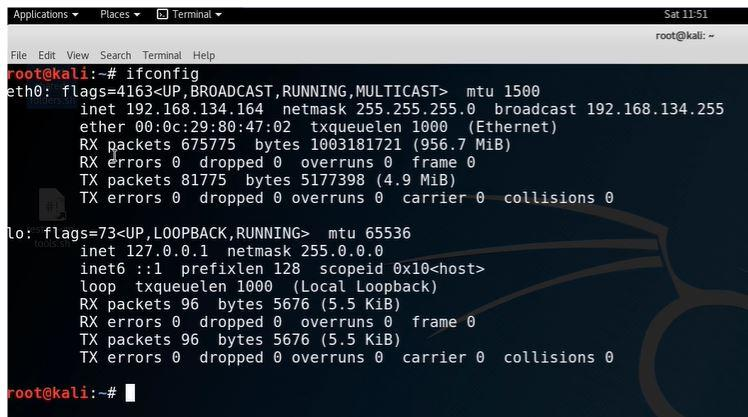
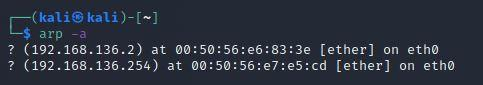
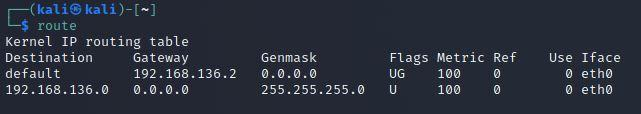

In windows we use ipconfigbut in Linux we use ifconfigbut they both are pretty same.
iwconfigis for wireless connection andpingcommand as well as remember that ICMPis another word for ping.

arpcommand is used to show the ip address that talk to and mac address assosiated with it.
i.e. if an ip address reaches out and talked out to a machine it will say who r u ? and will broadcast this ip address and will say
who has this ip address than the ip address will respond hey i do and this is my mac address.

so arp is simply assosicating ip address with mac address.
netstat -anocommand is used to see the active connections that are running on a machine.
If a machine is talking to somebody else and will be used in the penetration testing. For example if we open and browse something in firefox than
the infromation of the port being opend and used will be display here.
route - There could be machine that we are attacking might have multiple routes so we might see a 134 and 135 because
it might have dual home nick means it is talking to completley different network that we did not know that existed.
So that is idea pivoitingwhere we switch networks from one to another.
